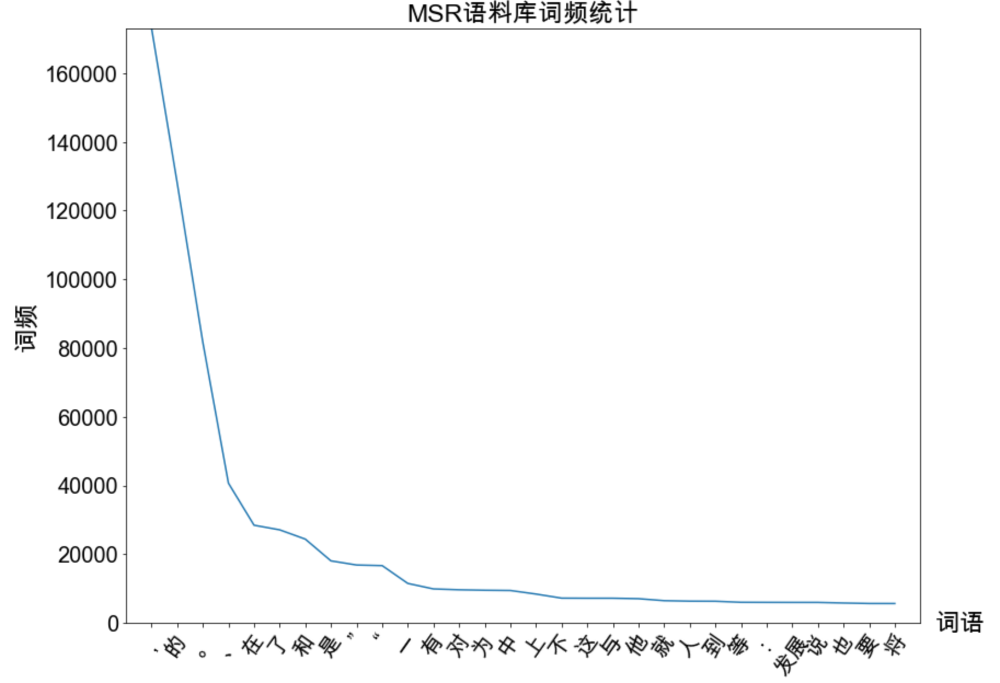

NLP 词典分词
NLP 词典分词:
- 中文分词 ：指的是将一段文本拆分为一系列单词的过程，这些单词顺序拼接后等于原文本。
- 中文分词算法大致分为 基于词典规则 与 基于机器学习 这两大派。
什么是词
- 在基于词典的中文分词中，词的定义要现实得多： 词典中的字符串就是词 。
- 词的性质– 齐夫定律 ：一个单词的词频与它的词频排名成反比。

词典
互联网词库(SogouW， 15万个词条)、清华大学开放中文词库(THUOCL)、HanLP词库(千万级词条)
这里以HanLP附带的迷你核心词典为例(本项目路径)：CoreNatureDictionary.mini.txt
| 上升 v 98 vn 18
上升期 n 1
上升股 n 1
上午 t 147
上半叶 t 3
上半场 n 2
上半夜 t 1
|
HanLP中的词典格式是一种以空格分隔的表格形式，第一列是单词本身，之后每两列分别表示词性与相应的词频。
切分算法
首先，加载词典：
| def load_dictionary():
dic = set()
# 按行读取字典文件，每行第一个空格之前的字符串提取出来。
for line in open("CoreNatureDictionary.mini.txt","r"):
dic.add(line[0:line.find(' ')])
return dic
|
- 完全切分
指的是，找出一段文本中的所有单词。
| def fully_segment(text, dic):
word_list = []
for i in range(len(text)): # i 从 0 到text的最后一个字的下标遍历
for j in range(i + 1, len(text) + 1): # j 遍历[i + 1, len(text)]区间
word = text[i:j] # 取出连续区间[i, j]对应的字符串
if word in dic: # 如果在词典中，则认为是一个词
word_list.append(word)
return word_list
dic = load_dictionary()
print(fully_segment('就读北京大学', dic))
|
输出：
| ['就', '就读', '读', '北', '北京', '北京大学', '京', '大', '大学', '学']
|
输出了所有可能的单词。由于词库中含有单字，所以结果中也出现了一些单字。
- 正向最长匹配
上面的输出并不是中文分词，我们更需要那种有意义的词语序列，而不是所有出现在词典中的单词所构成的链表。比如，我们希望“北京大学”成为一整个词，而不是“北京 + 大学”之类的碎片。具体来说，就是在以某个下标为起点递增查词的过程中，优先输出更长的单词，这种规则被称为 最长匹配算法 。从前往后匹配则称为 正向最长匹配 ，反之则称为 逆向最长匹配 。
1
2
3
4
5
6
7
8
9
10
11
12
13
14
15
16
17 | def forward_segment(text, dic):
word_list = []
i = 0
while i < len(text):
longest_word = text[i] # 当前扫描位置的单字
for j in range(i + 1, len(text) + 1): # 所有可能的结尾
word = text[i:j] # 从当前位置到结尾的连续字符串
if word in dic: # 在词典中
if len(word) > len(longest_word): # 并且更长
longest_word = word # 则更优先输出
word_list.append(longest_word) # 输出最长词
i += len(longest_word) # 正向扫描
return word_list
dic = load_dictionary()
print(forward_segment('就读北京大学', dic))
print(forward_segment('研究生命起源', dic))
|
输出：
| ['就读', '北京大学']
['研究生', '命', '起源']
|
第二句话就会产生误差了，我们是需要把“研究”提取出来，结果按照正向最长匹配算法就提取出了“研究生”，所以人们就想出了逆向最长匹配。
- 逆向最长匹配
1
2
3
4
5
6
7
8
9
10
11
12
13
14
15
16
17
18 | def backward_segment(text, dic):
word_list = []
i = len(text) - 1
while i >= 0: # 扫描位置作为终点
longest_word = text[i] # 扫描位置的单字
for j in range(0, i): # 遍历[0, i]区间作为待查询词语的起点
word = text[j: i + 1] # 取出[j, i]区间作为待查询单词
if word in dic:
if len(word) > len(longest_word): # 越长优先级越高
longest_word = word
break
word_list.insert(0, longest_word) # 逆向扫描，所以越先查出的单词在位置上越靠后
i -= len(longest_word)
return word_list
dic = load_dictionary()
print(backward_segment('研究生命起源', dic))
print(backward_segment('项目的研究', dic))
|
输出：
| ['研究', '生命', '起源']
['项', '目的', '研究']
|
第一句正确了，但下一句又出错了，可谓拆东墙补西墙。另一些人提出综合两种规则，期待它们取长补短，称为双向最长匹配。
- 双向最长匹配
这是一种融合两种匹配方法的复杂规则集，流程如下：
- 同时执行正向和逆向最长匹配，若两者的词数不同，则返回词数更少的那一个。
- 否则，返回两者中单字更少的那一个。当单字数也相同时，优先返回逆向最长匹配的结果。
1
2
3
4
5
6
7
8
9
10
11
12
13
14
15
16
17
18
19
20 | def count_single_char(word_list: list): # 统计单字成词的个数
return sum(1 for word in word_list if len(word) == 1)
def bidirectional_segment(text, dic):
f = forward_segment(text, dic)
b = backward_segment(text, dic)
if len(f) < len(b): # 词数更少优先级更高
return f
elif len(f) > len(b):
return b
else:
if count_single_char(f) < count_single_char(b): # 单字更少优先级更高
return f
else:
return b # 都相等时逆向匹配优先级更高
print(bidirectional_segment('研究生命起源', dic))
print(bidirectional_segment('项目的研究', dic))
|
输出：
| ['研究', '生命', '起源']
['项', '目的', '研究']
|
通过以上几种切分算法，我们可以做一个对比：
上图显示，双向最长匹配的确在2、3、5这3种情况下选择出了最好的结果，但在4号句子上选择了错误的结果，使得最终正确率 3/6 反而小于逆向最长匹配的 4/6 ， 由此，规则系统的脆弱可见一斑。规则集的维护有时是拆东墙补西墙，有时是帮倒忙。
字典树
匹配算法的瓶颈之一在于如何判断集合(词典)中是否含有字符串。如果用有序集合TreeMap)的话，复杂度是o(logn) ( n是词典大小);如果用散列表( Java的HashMap. Python的dict )的话，账面上的时间复杂度虽然下降了，但内存复杂度却上去了。有没有速度又快、内存又省的数据结构呢？这就是 字典树 。
- 什么是字典树
字符串集合常用宇典树(trie树、前缀树)存储，这是一种字符串上的树形数据结构。字典树中每条边都对应一个字， 从根节点往下的路径构成一个个字符串。字典树并不直接在节点上存储字符串， 而是将词语视作根节点到某节点之间的一条路径，并在终点节点(蓝色) 上做个标记“该节点对应词语的结尾”。字符串就是一 条路径，要查询一个单词，只需顺着这条路径从根节点往下走。如果能走到特殊标记的节点，则说明该字符串在集合中，否则说明不存在。一个典型的字典树如下图所示所示。
其中，蓝色标记着该节点是一个词的结尾，数字是人为的编号。按照路径我们可以得到如下表所示：
|
词语
|
路径
|
|
入门
|
0-1-2
|
|
自然
|
0-3-4
|
|
自然人
|
0-3-4-5
|
|
自然语言
|
0-3-4-6-7
|
|
自语
|
0-3-8
|
当词典大小为 n 时，虽然最坏情况下字典树的复杂度依然是O(logn) (假设子节点用对数复杂度的数据结构存储，所有词语都是单字)，但它的实际速度比二分查找快。这是因为随着路径的深入，前缀匹配是递进的过程，算法不必比较字符串的前缀。
- 字典树的实现
由上图可知，每个节点都应该至少知道自己的子节点与对应的边，以及自己是否对应一个词。如果要实现映射而不是集合的话，还需要知道自己对应的值。我们约定用值为None表示节点不对应词语，虽然这样就不能插人值为None的键了，但实现起来更简洁。那么字典树的实现参见项目路径(与书上略有不同，我写的比较简洁)： code/ch02/trie.py
通过 debug运行 trie.py 代码 ，可以观察到 trie 类的字典树结构：
基于字典树的其它算法
字典树的数据结构在以上的切分算法中已经很快了，但厉害的是作者通过自己的努力改进了基于字典树的算法，把分词速度推向了千万字每秒的级别，这里不一一详细介绍，详情见书，主要按照以下递进关系优化：
- 首字散列其余二分的字典树
- 双数组字典树
- AC自动机(多模式匹配)
- 基于双数组字典树的AC自动机
HanLP的词典分词实现
- DoubleArrayTrieSegment
DoubleArrayTrieSegment分词器是对DAT最长匹配的封装，默认加载hanlp.properties中CoreDictionaryPath制定的词典。
1
2
3
4
5
6
7
8
9
10
11
12 | from pyhanlp import *
# 不显示词性
HanLP.Config.ShowTermNature = False
# 可传入自定义字典 [dir1, dir2]
segment = DoubleArrayTrieSegment()
# 激活数字和英文识别
segment.enablePartOfSpeechTagging(True)
print(segment.seg("江西鄱阳湖干枯，中国最大淡水湖变成大草原"))
print(segment.seg("上海市虹口区大连西路550号SISU"))
|
输出：
| [江西, 鄱阳湖, 干枯, ，, 中国, 最大, 淡水湖, 变成, 大草原]
[上海市, 虹口区, 大连, 西路, 550, 号, SISU]
|
- 去掉停用词
停用词词典文件：stopwords.txt
该词典收录了常见的中英文无意义词汇(不含敏感词)，每行一个词。
1
2
3
4
5
6
7
8
9
10
11
12
13
14
15
16
17
18
19
20
21
22
23
24 | def load_from_file(path):
"""
从词典文件加载DoubleArrayTrie
:param path: 词典路径
:return: 双数组trie树
"""
map = JClass('java.util.TreeMap')() # 创建TreeMap实例
with open(path) as src:
for word in src:
word = word.strip() # 去掉Python读入的\n
map[word] = word
return JClass('com.hankcs.hanlp.collection.trie.DoubleArrayTrie')(map)
## 去掉停用词
def remove_stopwords_termlist(termlist, trie):
return [term.word for term in termlist if not trie.containsKey(term.word)]
trie = load_from_file('stopwords.txt')
termlist = segment.seg("江西鄱阳湖干枯了，中国最大的淡水湖变成了大草原")
print('去掉停用词前：', termlist)
print('去掉停用词后：', remove_stopwords_termlist(termlist, trie))
|
输出：
| 去掉停用词前： [江西, 鄱阳湖, 干枯, 了, ，, 中国, 最大, 的, 淡水湖, 变成, 了, 大草原]
去掉停用词后： ['江西', '鄱阳湖', '干枯', '中国', '最大', '淡水湖', '变成', '大草原']
|